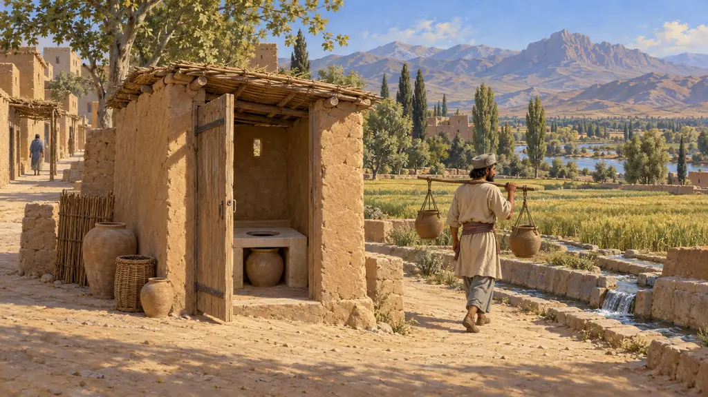
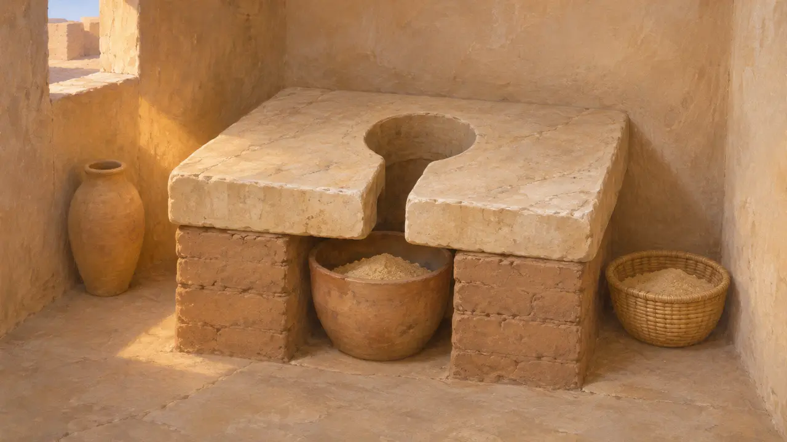
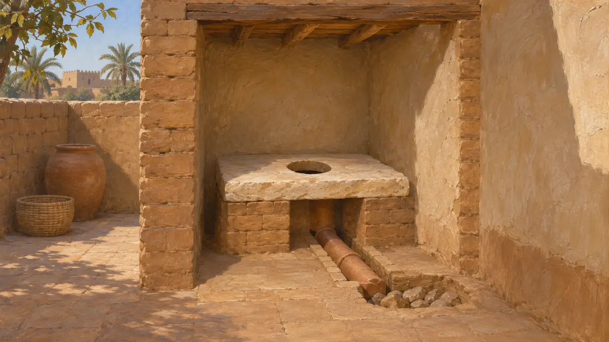
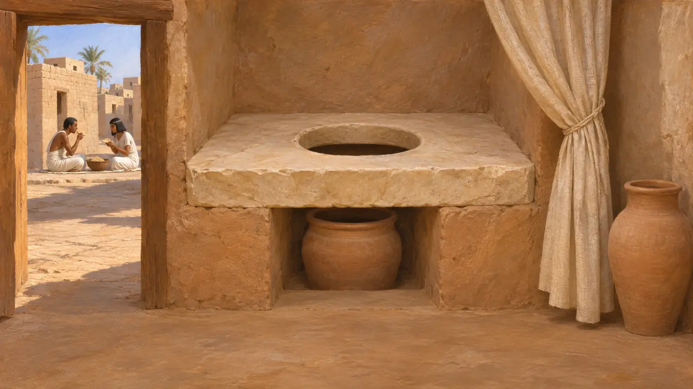
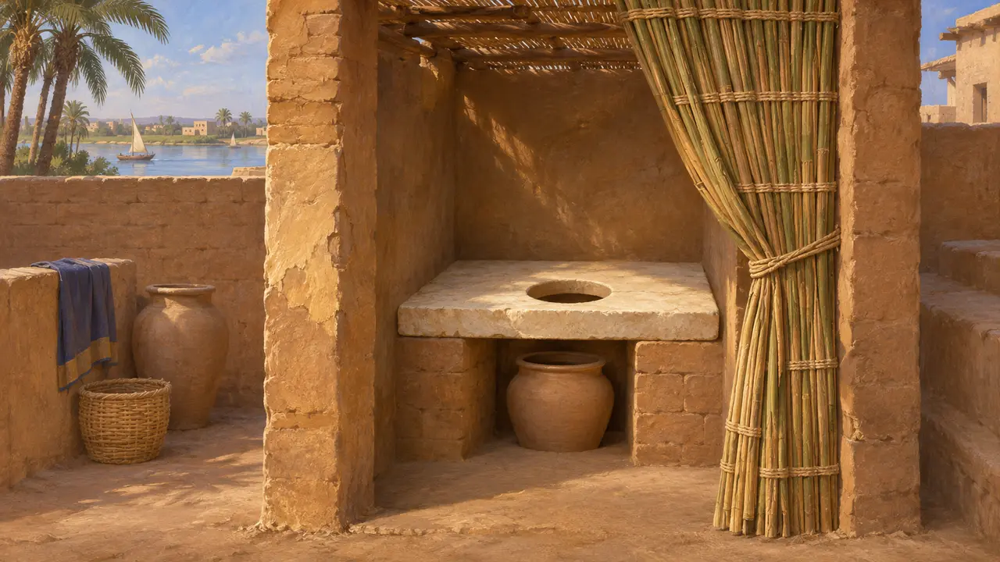
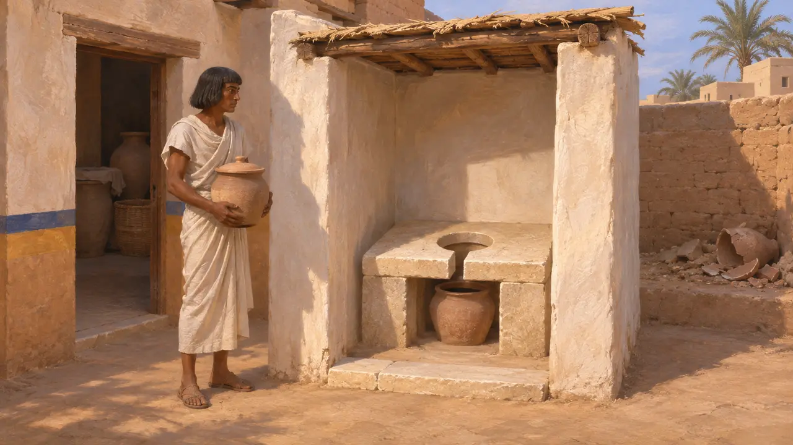

Latrines
Siège de latrines domestiques d'un type ancien d'Égypte et du Proche-Orient, en usage aux VIe-Ve siècles av. J.-C.
Les latrines étaient un siège fixe ou une petite pièce où la maisonnée se soulageait, le plus souvent au-dessus d'un pot, d'une fosse ou d'un égout. Ces aménagements existaient depuis des siècles à l'époque de Cyrus, attestés dans des maisons égyptiennes et des palais mésopotamiens, mais ils restaient un confort de gens aisés. La plupart des habitants de l'empire se contentaient sans doute du plein air, de pots et de fosses d'aisances.
Dans le jeu : Le jeu montre un siège au-dessus d'un pot de sable vidé dans les champs, qui maintient propres les maisons à moins de quatre cases ; les Maisons de l'ancien en ont besoin. Les sièges à pot de sable sont connus en Égypte, mais rien n'atteste avec certitude qu'on les vidait dans les champs, et ces sièges étaient rares.

Des sièges de pierre sur le sable à Amarna
Dans les sourcesLe témoignage égyptien le plus clair vient d'Amarna, la cité d'Akhenaton, bâtie environ 800 ans avant Cyrus. Les fouilleurs y ont trouvé des sièges de calcaire percés d'une ouverture en forme de trou de serrure, posés sur des supports de brique au-dessus d'un récipient amovible qui contenait probablement du sable. Ils se trouvaient dans de petites salles d'eau des grandes maisons, et non dans les demeures ordinaires.
B. Kemp, The City of Akhenaten and Nefertiti, 2012

Les égouts en Mésopotamie et en Perse
Dans les sourcesEn Mésopotamie, dès le IIIe millénaire, les palais et certaines maisons possédaient des latrines qui se déversaient dans des conduites ou des puisards. À Persépolis, la terrasse royale fut aménagée avec un réseau d'égouts taillés dans le roc sous les bâtiments pour évacuer la pluie et les eaux usées. Les fouilles n'ont pas montré en détail le fonctionnement des latrines de la terrasse.
E. Schmidt, Persepolis I, 1953

Hérodote sur les coutumes égyptiennes
Récit antiqueHérodote énumère des coutumes égyptiennes qui lui semblaient l'inverse de celles des Grecs. Il dit que les Égyptiens se soulageaient à l'intérieur et mangeaient dehors, dans les rues, expliquant que les nécessités honteuses doivent se faire en privé. Sa remarque concorde avec les latrines domestiques retrouvées dans les maisons égyptiennes, bien qu'il écrivît en observateur étranger en quête de contrastes.
Herodotus 2.35

La pudeur perse et l'eau courante
Récit antiqueHérodote rapporte qu'il était interdit aux Perses de vomir ou d'uriner devant autrui. Il ajoute qu'ils n'urinaient ni ne crachaient dans un fleuve et ne s'y lavaient pas les mains, car ils vénéraient profondément les cours d'eau. Ces coutumes témoignent d'un souci de l'endroit où allaient les déchets, mais il ne décrit pas les latrines perses.
Herodotus 1.133; Herodotus 1.138

Qui avait des latrines, et où allaient les déchets
ContestéLa plupart des archéologues pensent que les latrines bâties étaient réservées aux maisons aisées et aux palais, mais on ignore encore comment les déchets étaient évacués. Les pots étaient peut-être vidés hors de la maison, dans des fosses ou sur des tas d'ordures ; rien ne prouve avec certitude qu'on les épandait sur les champs. Les règles zoroastriennes de pureté relatives aux déchets corporels furent mises par écrit bien après les Achéménides, et les historiens ne s'accordent pas sur la mesure dans laquelle elles reflètent la pratique perse de cette époque.
B. Kemp, The City of Akhenaten and Nefertiti, 2012; P. Briant, From Cyrus to Alexander, 2002
Sources
- B. Kemp, The City of Akhenaten and Nefertiti, 2012
- Herodotus 2.35
- Herodotus 1.133; 1.138
- E. Schmidt, Persepolis I, 1953
- P. Briant, From Cyrus to Alexander, 2002